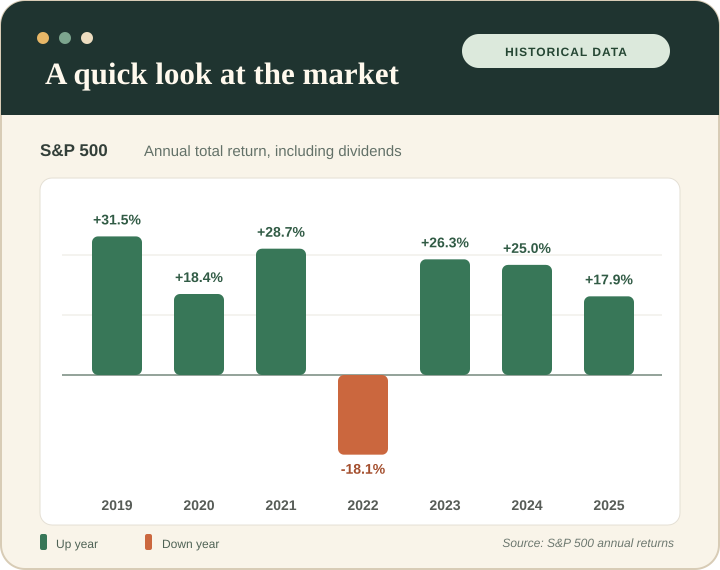

THE STOCK MARKET, EXPLAINED FOR STUDENTS
Learn what you're buying. Then decide for yourself.
New to stocks and ETFs? I made Market Notebook to explain what I was learning about investing, with real market data and sources you can check along the way.

Pick a place to start.
You don't need to know any ticker symbols before you start.
What exactly is a stock?
Owning part of a company, in plain English. Plus why a familiar name isn't automatically a smart buy.
Learn about stocks 02 / THE DIFFERENCEOne stock or a whole basket?
Find out how ETFs work, why people use them and what risks they still carry.
Compare stocks and ETFs 03 / THE RESEARCHWhat do famous investors own?
Look at public filings behind Buffett, Ackman and Soros—without mistaking holdings for guaranteed returns.
Open Investor PlaybookThere's more to a stock than its price.
Explore a company's revenue, profit, and valuation in a hands-on beginner research lab. Compare companies and work through a step-by-step checklist.
Try the Research LabReported annual financials for Apple, Microsoft and Coca-Cola, with fiscal dates and source reports. Not live quotes.
The market doesn't go up every year.
The S&P 500 had six negative years from 2000 through 2025. Here's what those ups and downs actually looked like.
S&P 500 annual total returns · 2000–2025
On a small screen, swipe across the chart to see more.
See the full data table
What I noticed: 2000–2002 were three down years in a row, and 2008 was down 37%. It's worth looking at the bad years before putting your savings at risk.
See what $10,000 would have doneCan $25 a week make a difference?
$50,054 after 20 years*
That's what a hypothetical $25 per week adds up to at a fixed 6% annual return, with monthly contributions and compounding. You would have deposited $26,000 of your own money.
*Illustration only. Actual returns vary and losses are possible. Before fees, taxes and inflation.
Try your own numbers